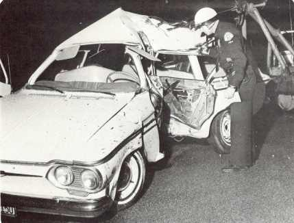
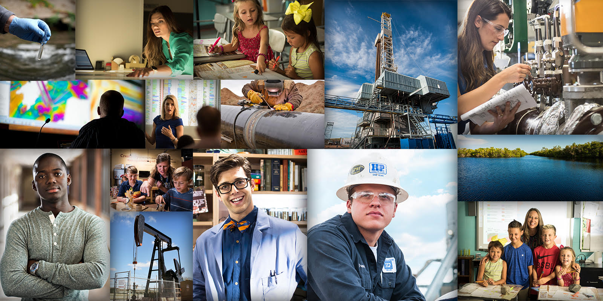
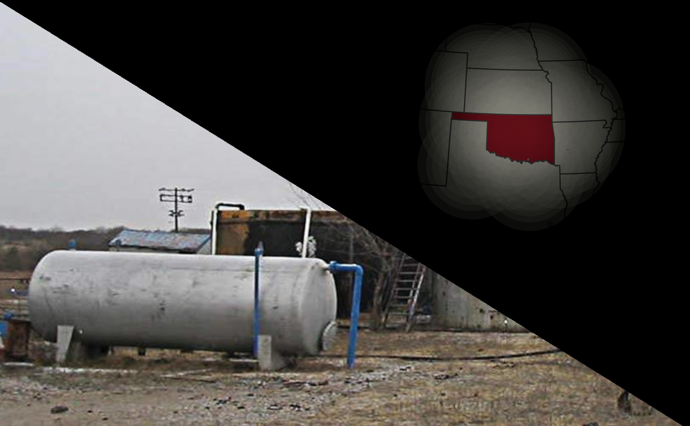
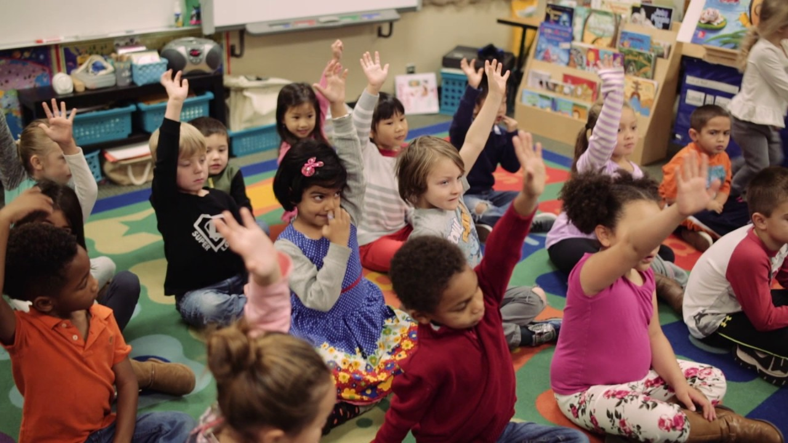
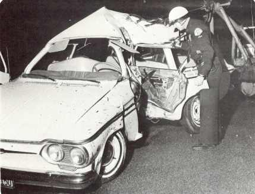
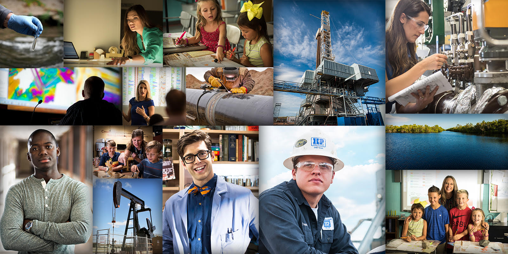
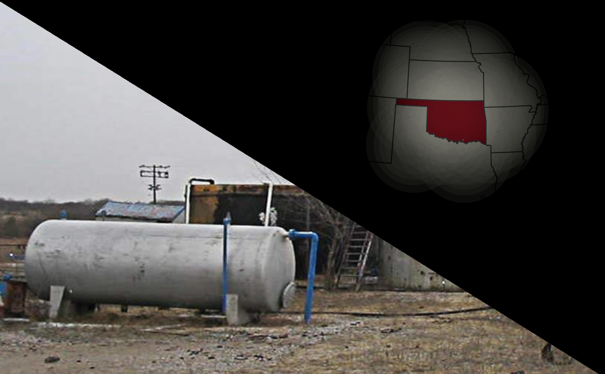
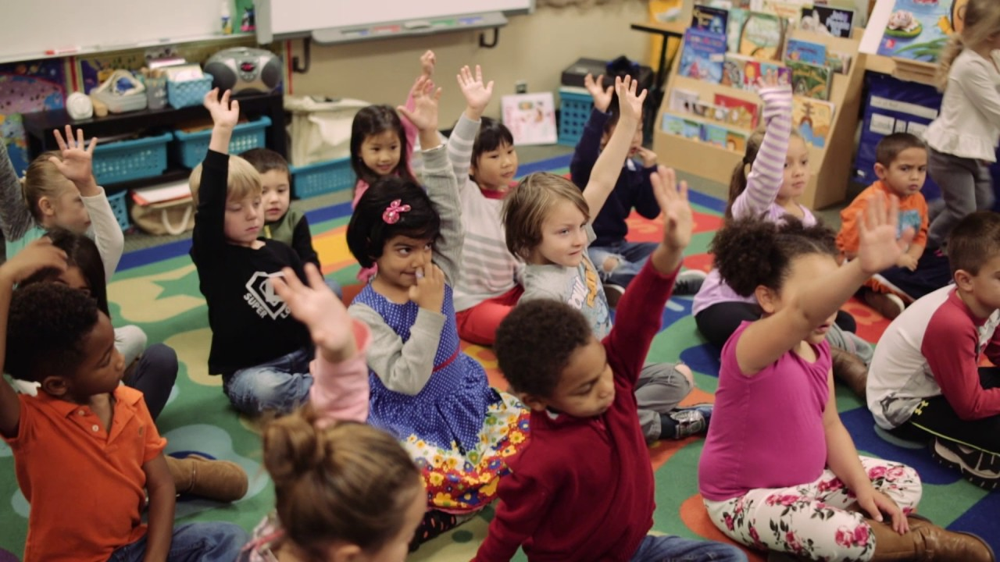

The OERB, or Oklahoma Energy Resources Board, was founded in 1993 “to use the strength of Oklahoma’s greatest industry to improve the lives of all Oklahomans through education and restoration”.
What exactly is an “improvement” in the eyes of the OERB?
In February of 1995, the OERB was given $200,000 award by the government to fund its progress for the upcoming year. This quarterly report for the government sheds light on OERB’s definition of improvement, breaking down restoration and education as “Tasks”.
The goal of the restoration Task was to perform an “environmental assessment of abandoned oil and gas drilling and production sites” and subsequently begin efforts to restore that site based on their judgement.
Meanwhile, the goal of the education Task was to deliver a “comprehensive public education/outreach program” that would underscore the importance of the Oklahoma gas and oil industries in the state for children.
As of their latest Annual Report, the OERB has seen much progress from both initiatives. Their 2018 Annual Report boasts 16,550 restored well sites and 16,000 teachers trained on educational resources provided by the organization.
Within the scope of their original mission, the OERB has undoubtedly had a profound impact on both the educational and geographical landscape of Oklahoma.
But this scope is a problem.
The OERB was founded in 1993. Around that same time, the decarbonization movement had begun to gain some serious traction. Five years before in 1998, Dr. James Hansen and Dr. George Woodwell, among others, testified before the Senate that oil, coal, and other carbon-producing fossil fuels were responsible for a global warming of the Earth that would have a devastating effect on the modern world through climate change.
Two years after the OERB was formed, the Intergovernmental Panel on Climate Change issued its 1995 Second Assessment, reaffirming the conclusions reached by Hansen and others that human production of greenhouse gases contributed to the dangerous warming of the planet in a significant way.
Throughout history, industry leaders charged with responsibility for ethical dilemmas like climate change have deflected, presenting society with a red herring designed to focus attention away from the original issue.
When automobile accidents were on the rise in the sixties, General Motors (GM) deflected defects in their popular Chevrolet Corvair model by turning instead to highway design and construction as the primary cause. By shifting attention away from themselves, GM avoided the monetary and reputational costs that came with taking responsibility for their own product.
Following the automobile industry, tobacco companies orchestrated their own red herring in the eighties and nineties when evidence began to suggest that cigarettes were a primary cause of house fires. In response, tobacco industry leaders staged a campaign targeting furniture as the root of the problem.
With the OERB, history repeats itself. Around the same time that government agencies around the world reached a consensus to actively fight against climate change through decarbonization, leaders of the oil and gas industry in Oklahoma responsible for greenhouse gas emission formed the OERB. Rather than plead guilty to the charges alleged by these agencies, OERB members instead turned to their two initiatives: restoration and education.
One the one hand, the restoration project allows the OERB shifts focus to the past, deflecting attention away from the charges levied against them in the present. The initiative also localizes the problems caused by their industry to the Oklahoma landscape, ignoring the greater ramifications of carbon dioxide emissions on the rest of the planet.
On the other hand, the education initiative instills faith and support among future Oklahoma residents in the oil and gas industries, creating a natural barrier against legislation that would force the members of OERB to face the global consequences of their actions head on.
Although the OERB has seen much success in the context of its original mission, that mission was declared around the same time that the founders of the OERB were charged by government agencies around the world as the source of global climate change. When juxtaposed with the automobile and tobacco industries of the past, the OERB appears to follow in their footsteps in its deflection of those charges, as demonstrated through its restoration and education initiatives. To further study this deflection, the next chapter analyzes a book from the OERB-produced educational children's series, “Petro Pete”.
See this document for the remaining parts of the website.